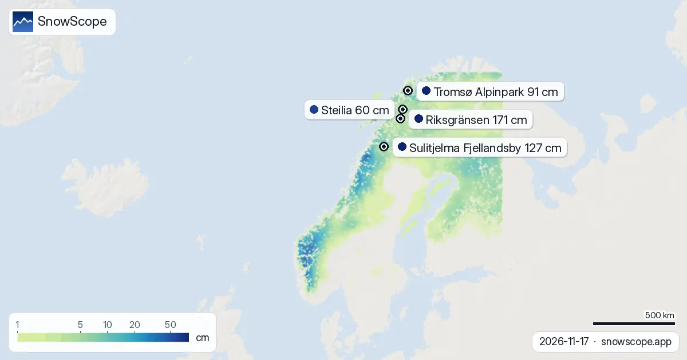

Snørapporter · Snø i Europa etter land
Snø i Europa etter land: Tirsdag 17. november: snøen dekker rundt 251 050 km² i Norge. Arealet er nesten det samme som i går. Det er 89 % av området …
Snow by country today
The whitest countries today: Norway (89 %), Sweden (79 %) and Finland (59 %).
Most new snow in the week ahead: France (87 cm), Switzerland (85 cm) and Italy (58 cm).
| Country | White | Deepest resort | Next 7 days |
|---|---|---|---|
| Norway | 89 % | Riksgränsen · 171 cm | 39 cm |
| Sweden | 79 % | Björkliden · 131 cm | 17 cm |
| Finland | 59 % | Kallin · 25 cm | 15 cm |
| Switzerland | 41 % | Glacier 3000 · 46 cm | 85 cm |
| Austria | 30 % | Kühtai · 54 cm | 47 cm |
| UK | 22 % | Nevis Range · 15 cm | 11 cm |
| Italy | 13 % | La Thuile ski · 50 cm | 58 cm |
| France | 10 % | La Grave · 113 cm | 87 cm |
| Slovakia | 10 % | Ski centrum Dedinky · 42 cm | 12 cm |
| Poland | 6 % | Karpacz · 36 cm | 12 cm |
| Romania | 6 % | Borsec · 27 cm | 12 cm |
| Slovenia | 6 % | Vogel · 23 cm | 7 cm |
| Ukraine | 6 % | Драгобрат · 8 cm | 21 cm |
| Andorra | 2 % | Ordino-Arcalis · 3 cm | 7 cm |
| Germany | 2 % | Zugspitze · 54 cm | 31 cm |
| Bulgaria | 1 % | Bansko · 4 cm | 8 cm |
| Czechia | 1 % | Ramzová · 21 cm | 7 cm |
| Kosovo | 1 % | – | 11 cm |
| Albania | 0 % | – | 16 cm |
| Bosnia and Herzegovina | 0 % | – | 15 cm |
| Spain | 0 % | Aramón Cerler · 17 cm | 4 cm |
| Greece | 0 % | – | 2 cm |
| Croatia | 0 % | Sljeme · 1 cm | 9 cm |
| Hungary | 0 % | – | 1 cm |
| Ireland | 0 % | – | 0 cm |
| Montenegro | 0 % | Ski centar Savin kuk · 15 cm | 15 cm |
| North Macedonia | 0 % | – | 10 cm |
| Portugal | 0 % | – | 1 cm |
| Serbia | 0 % | Avantura park · 3 cm | 8 cm |
Snøforhold i Norge, 17. november 2026: skisteder, nysnø og de neste dagene

Tirsdag 17. november: snøen dekker rundt 251 050 km² i Norge. Arealet er nesten det samme som i går. Det er 89 % av området i Norge vi følger.
Snødekket i dag
Snøen ligger helt ned til lavlandet og kysten. Sammenlignet med 183 090 km² for sju dager siden er det 67 960 km² mer.
tirsdag 17. november 2026
mandag 16. november 2026